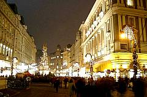
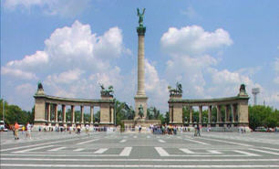
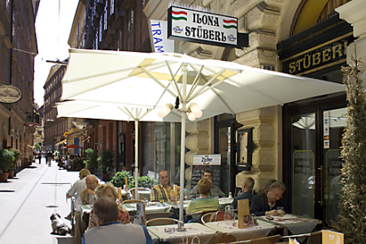
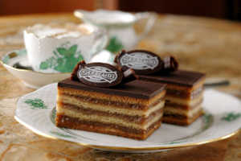
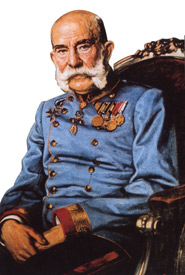

Mit dem Zug
unterwegs, aus dem Westen kommend oder auf der Rückfahrt aus
Budapest bietet sich ein Besuch der österreichischen
Hauptstadt an, wenn man in Wien zur Weiterfahrt erst den nächsten,
übernächsten oder erst den Zug am nächsten Tag zur Weiterfahrt nimmt.
Eine Chance jedes Mal auf Sightseeing in Wien.
Die
Fahrt mit dem schnellen Tragflügelboot auf der Donau von Budapest
über Bratislava nach Wien dauert 6,5 Stunden und
nur 5,5 Stunden flussabwärts auf
der Rückfahrt.
Unterwegs fährt man
inmitten
unberührter
Natur an historischen Städten vorbei, wie Visegrád
(Bild
rechts, früher Sitz der ungarischen Könige), Komárom,
Staustufen-Schleusensee Grabcikovo, Bratislava (heute Hauptstadt der
Slowakei und während der
türkischen Besatzung 150 Jahre lang
ungarische Hauptstadt), Schleuse Freudenau.
Am
Bord
werden kalte
Speisen und Getränke angeboten. Für Gruppen ab 10
Personen
können wir für unsere Gäste (mit Aufenthalt
in Budapest) nach Vorbestellung auch ein Mittagsmenü
arrangieren. Die Fahrt ab Mitte April bis Ende
Oktober
ist ein
Vergnügen besonderer Art. Die Schnelboote fahren
gegenüber
dem königlichen Burgpalast am Vigadó tér
Platz,
südlich der Kettenbrücke im Stadtteil Pest
los und
fahren täglich einmal in beide Richtungen.
Sight
Seeing Tour
in Wien für Durchreisende
auf Schußters Rappen:
Aus Erfahrung schlagen wir vor,
einen Zug ca. 6 Stunden später zur Weiterfahrt auszusuchen. So sind wir viele Jahre lang mit
dem Zug von Hamburg nach Budapest über Wien gefahren, wo wir den
nächsten Zug noch fit erreichten,
nachdem wir die meisten Sehenswürdigkeiten von Wien zuerst
nur von aussen bewunderten. Wenn man das in beiden Richtungen
tut,
dann sieht man Wien doppelt so oft, wie Budapest! Auf
der Rückfahrt sind wir schließlich nur anderthalb
Stunden
später in Hamburg angekommen, als der direkt fahrende
Zug. Wenn
man die eine Stadt schon kennt, umso interessanter wird ein
Vergleich der einst auf allen Ebenen rivalisierenden k. u. k.
Hauptstädte. So eine Stadttour benötigt nur
eine kurze
Vorbereitung im Westbahnhof. Wir sichern die Koffer in den
Schließfächern und besorgen die notwendigen
Broschüren
und einen Stadtplan am Tourist Infostand.
Wien, die Walzerstadt an der
"Schönen Blauen Donau" ist zu jeder Jahreszeit eine Reise
wert. Schloß Belvedere,
Schloß Schönbrunn, Hofburg, Oper, Prater,
Große Ringstrasse, Kärtnerstrasse, Graben,
Stephansdom, Konzerte und Ballett, eine
Fülle von Museen, Kaffeehäusern, Kneipen im "Bermuda
Dreieck", Sachertorte im Hotel Sacher, zum Heurigen nach Grinzing oder
nach Gumpoldskirchen, und und und...
Der
Fußweg in Wien:
Alle Züge aus dem Westen halten
im Westbahnhof. Da denkt
man natürlich an den berühmten Mahler, der bis 1913
hier als
fleißiger Tagelöhner arbeitete und drei Jahrzehnte
später die halbe Welt in Schutt und Asche verwandelte. Die
an der Südseite des Gebäudes entlang verlaufende
Mariahilfer
Strasse stellt eine direkte Verbindung ins Stadtzentrum her. - Wir
haben
uns in vielen
Fahrten auf eigene Faust vom Wiener
Westbahnhof über die Mariahilfer und
Kärtnerstrasse bis
zum Stephansdom immer weiter vorangewagt, und
haben ca. 400 m hinter dem Dom den
Donaukanal
und nach weiteren 1,5 km auch noch die
Donau angeschaut. Sie war niemals so blau, wie man
sie weltweit besingt, sondern genauso grau, wie in Budapest.
Die Mariahilfer Strasse war
lange Zeit das
Einkaufsparadies der
ungarischen Touristen, etwa seit Mitte des 19. Jahrhunderts, als sich
viele ungarische Wanderarbeiter am damals rasanten Ausbau von Wien
beteiligten. Wie groß die Baumaßnahmen damals
waren, kann
man sich vorstellen, wenn man die damalige Bevölkerung von
Wien
betrachtet. Um 1890 wohnten mehr Gastarbeiter,
als geborene Österreicher in Wien. Die Gastarbeiter kamen damals
überwiegend vom
Balkan, aber auch aus anderen Ländern. Mein Uropa kam als
Bauingenieur aus
Stuttgart und war am Bau der Wiener Strassenbahnen beteiligt. Meine
in Wien geborene Oma sagte oft, traue keinem, der behauptet, ein Wiener
zu sein,
der ist wahrscheinlich ein Zugereister, wie z.B. der weltweit
berühmte Tagelöhner vom Westbahnhof. Alteingesessene
Wiener
haben sich
damals als
Österreicher, aber niemals als Wiener bezeichnet, das war und
ist
auch heute noch ein Unterschied. Gut Hundert Jahre später im
Jahre
1990, als es eine wirtschaftliche, jedoch als politisch
deklarierte Wende in Ungarn stattfand,
boten die Geschäfte in der Mariahilfer
Strasse noch Waren an, wofür sich die Ungarn
früher interessierten.
In der roten
Ära, etwa ab
1949 blühte das
Ungarngeschäft der Exilungarn in Wien auf. Gut drei Jahrzehnte lang
durften hier nur
privilegierte Parteibonzen aus Ungarn, Polen
und Tschechoslowakei einkaufen, denen ihr Regime einen
Reisepass für Westreisen gewährt hatte. Erst seit
1979 durften die Ungarn ins Ausland reisen, aber erst
seit 1990
ohne Antrag. Dementsprechend wandelte sich das
Geschäftsleben in der Umgebung des Wiener Westbahnhofes
rapide. Zuerst
fuhren die Ungarn in wohlorganisierten Reisebussen weiter zu den
größeren
Supermärkten und die Läden in der Mariahilferstrasse
stellten sich auf chinesische
Ramschwaren
um. Das ging während des
Jugoslawienkrieges einige Jahre lang gut, aber auch
das Balkan-Ramschgeschäft ging einmal zu Ende. Es entsteht nun
ein eher vornehmes
Geschäftsviertel in der Mariahilfer Strasse.
Nun
sind wir immer noch in der langen Marienhilfer Strasse von Wien und
entfernen uns immer weiter vom Westbahnhof, bis es
nach knapp 2 km geradeaus nicht mehr weitergeht. Die letzten 200 Meter
vor dem Ring heißt Babenbergerstrasse, in der wir die berühmte Kaiserin
links im Vorbeigehen begrüßen dürfen,
hoch oben auf Ross steht doch ihre riesengroße
Reiterstatue, selbstverständlich am Maria Theresia Platz.
Wir
stehen nun vor
dem Ring,
wo Fiaker, die vielbesungenen zweispännigen
Pferdekutschen die Touristen zu
einer
Stadtrundfahrt einladen.
Ein wichtiger Unterschied ist,
ob die Pferdekutsche von einem oder von zwei Pferden gezogen wird. Dementsprächern
haben diese Droschken untrschiedliche Bezeichnung. Die Kutschen mit
einem Zugpferd nennt man Einspänner.
Nicht zu verwechseln
sollte
man zwei verschiedene Einspänner. Auch im Kaffeehaus
gibt es
Einspänner, der meist ein großer Brauner genannt
wird und
dann meist eine große Tasse Kaffee bedeutet.
Wenn die
Droschke
von zwei Pferden gezogen wird, dann wird sie in Wien Fiaker
genannt. Wien ist die Stadt mit einer
Hochkultur für
Kaffeetrinker. Wenn man all das kosten will, was in den
berühmten, miteinander rivalisierenden Kaffeehäusern
der Stadt angeboten wird,
dann sollte man unbedingt einmal den Einspänner
probieren. Den
Pharisäer möchten wir Autofahrern nicht
empfehlen, er ist nämlich mit einem Schuss. Ob mit Amaretto,
echtem Wiener Mandellikör, der evt.
aus Steiermark kommen soll, darüber
grübeln Sie doch
selbst. Übrigens: Trotz Alkohol im Kaffee, Steiermark sollte
man nicht verwechseln mit dem Sankt Eiermarkt im
südöstlichen Teil von Österreich.
Links von der Mariahilfer
Strasse heisst der Ring Burgring, man sieht bis zum Rathaus
direkt gegenüber der Hofburg.
Da wir alles einprägen
wollen, gehen wir zuerst rechts im Opernring und erreichen nach rd.
400m
das Opernhaus, natürlich am Opernplatz.
Das Gebäude
im typischen Baustil erinnert an die Opernhäuser
anderer europäischer Großstädte, so auch an
die
Budapester Oper. Es war der Kaiser in Wien, der zur Baugenehmigung der
Budapester
Oper die Auflage hinzufügte: Das Opernhaus von Budapest
darf nicht größer werden, als die Oper von Wien.
Womit der Kaiser nicht rechnen konnte: das Gebäude in Budapest
ist von innen und aussen wesentlich schöner
geschmückt. In Kenntnis beider Opernhäuser kann ein
Ungar stolz verkünden, in Wien fehlt die Qualität,
zumindest in der Bausubstanz...
Rechts an der Staatsoper vorbei bietet
sich der Abstecher zum Stephansplatz hin, da gibt es einiges zu sehen.
Zum ersten Male sollte man den Stephansdom anschauen, der
selbstverständlich am Stephansplatz steht.

Wenn man
hinter dem Opernhaus die Kärtnerstrasse
erstmals erblickt, dann vergleicht man sie automatisch mit der
Váci utca Strasse, die die alte Flaniermeile von
Budapest ist. Vom
Opernplatz bis zum Stephansdom ist die Kärtnerstrasse ca. 800 m lang, sie ist etwas moderner als
die Fußgängermeile von Budapest - ein
Überbleibsel der stärkeren
Kriegszerstörung und des häufigen
Betriebswechsels. Auch hier beherrschen
die
gastronomischen Betriebe das Strassenbild, so richtig vornehm
wird
die Innenstadt von Wien erst, wenn man vor
dem Stephansdom steht und zuerst die
Boutiken im Graben (Bild links) anschaut.
Dort wurden viele Häuser originalgetreu rekonstruiert und
nicht mit modernen Neubauten ersetzt.
Ein Geheimtipp,
der in keinem Reiseprospekt steht: die unterirdische
öffentliche Toilette im Graben durfte einst Kaiser
Franz
Josef II. höchstpersönlich selbst einweihen. Die
Räumlichkeiten
sind hier
fürstlich, die Türklinken massiv vergoldet. Es ist
eine
der Sehenswürdikeiten von Wien,
wofür man von der
gepfefferten Eintrittskarte nicht erschrecken sollte, auch wenn man
nicht gerade von der Notdurft gedrängt wird. Der
Zeitbedarf:
Für
den Fussweg vom Westbahnhof bis zum Stephansdom und zurück
reichen
ca. 5
Stunden bequem. Etwa 4 Stunden benötig man, wenn man nicht bis
zum
Stephansdom marschiert, sondern in Höhe des Heldenplatzes
links
einen
Abstecher zum Wiener Rathaus und dem Hofburgtheater wählt und
von hier
über den Heldenplatz und Mariahilfer Strasse zum Westbahnhof
zurückkehrt.
Stephansdom
- Wenn
man die Sehenswürdigkeiten stadteinwärts auf der
linken Seite
schon kennt, läßt sich auch der gesamte Weg
vom
Westbahnhof bis zum Stephansdom ersparen, indem man sich in der U-Bahnlinie 3
für eine Fünf-Stationen-fahrt bis zum "Stephansplatz"
entscheidet.
Der Bau des Stephansdoms begann schon im 11. Jahrhundert, vom Altbau
ist allerdings nichts übriggeblieben. Der
älteste Teil des heutigen Gotteshauses entstand 1230-1263. Das
Warzeichen Wiens, der 136,7 m hohe Nordturm wurde 1433
fertiggestellt. Der Bau des Südturmes
(Bild rechts) wurde aus finanziellen
Gründen nie beendet und in einer
Höhe von 68,3 m im Jahre 1578 abgeschlossen. Der Stephansdom weist
von aussen
große Ähnlichkeiten mit der Matthiaskirche
in Budapest
auf. Beide Kirchen sind von gotischen Elementen
geprägt und wurden im Renaissancestil
abgeschlossen. Im Innenraum fallen in Wien die
kahlen,
schlicht nur weiß gestrichenen Wände und barocke
Altäre ins Auge. Nicht als
wenn die Katholiken in Ungarn künstlerisch
begabter oder reicher wären, die Matthiaskirche ist
eine der
wenigen
katholischen Kirchen überhaupt, wo die Innenwände
kitschig
bunt bemahlt sind - von den Türken, die
einst das
Gotteshaus am Burgberg in Budapest für ihre Zwecke
entweihten.
Mit jährlich nahezu
zwei Millionen Besuchern ist der
Stephansdom offensichtlich das wichtigste Objekt der Begierde unter den
Sehenswürdigkeiten von Wien. Im Dom bieten sich verschiedne
Rundgänge an:
Täglich zwischen 9
und 17:30
Uhr kann der 137 m hohe Südturm
über 343 Treppenstufen bis zur Türmerstube erklommen
werden, von wo aus
man einen herrlichen Blick über die Dächer der Stadt
genießen kann.
Auch
der mit 68 m "nur" halb so hohe Nordturm
kann besucht werden. Hier gibt es
einen Aufzug, der auch
nach unten zu den Katakomben fährt. Unterwegs erfährt
man einiges aus der Kirchengeschichte.
Etwa zweistündlich
finden
Katakombenführungen statt, die ca. 30 Minuten dauern.
Heldenplatz
- Wenn
man schon den Zeitbedarf für die Wienbesuche besser
einschätzen kann, dann bietet sich ein
Kurzbesuch einzelner
Sehenswürdigkeiten an, die man schon vom Vorbeigehen
kennt. So
fallen zuerst die Ähnlichkeiten beider halbrunden
Heldenplätze auf....

Die Burg am Heldenplatz
von Wien
>>>
und
<<< der
Heldenplatz von Budapest
Beide
Heldenplätze sind Demostrationsobjekte
von Landesherren aus
der Zeit der Monarchie und früher. Beide
Sehenswürdigkeiten
sind von wichtigen Landesmuseen umgeben.
Links ein
(zweispänner) Fiaker vor dem österreichischen
Parlament. Wenn die
Droschke
von zwei Pferden gezogen wird, dann wird sie in Wien Fiaker
genannt. Auf der rechten
Seite des Bildes sieht man die Turmspitzen des Wiener Rathauses. Dort
gibt es alljährlich einen erlebnisreichen Weihnachtsmarkt und
bei günstigem Wetter eine Eisbahn für jedermann.
Gegenüber auf der anderen Seite der Großen
Ringstrasse stehen die Hofburg und der
Heldenplatz. Zu Fuss erreicht man
diese Sehenswürdigkeiten von Wien in kurzer Zeit, da
sie nahe zueinander liegen. Von
einem Fiaker betrachtet ist jedoch eine Stadtbesichtgung ein besonderes Erlebnis.
Einspänner Droschken zum
Vergleich im Madison Park/New York im Jahre 1900 >>>
Pferdekutschen gibt es
weltweit schon lange, aber nirgendwo besingt man sie so schön und fröhlich, wie in Wien.
Unterwegs stellt sich
immer die Frage nach einer Zwischenmahlzeit
Dann eben nichts wie hin zum Esterházy Stüberl im
im legendären, sagenumworbenen
Esterházy Kellerin einer der engen, besonders
romantischen Gassen der alten Innenstadt! Hier
unbedingt das "Original Wiener Schnitzel" probieren oder
vielleicht zwei Ecken weiter, noch näher zum Stefansdom zum
Ilona Stüberl, direkt am Graben.

Ilona Stüberl - bodenständige
ungarische Küche, wie bei Mama - befindet sich in der
Bräunerstrasse 2, nur 25 m vom Graben entfernt, ganz
nah zum Stephansdom am
Stephansplatz, halbwegs zum
Michaeler-platz, wo u.a. die Hofreitschule
und die Wiener Hofburg sind.
Lassen Sie sich nicht
verschaukeln von den unzähligen Berichten in Presse, Funk und
Fernsehen, wenn
Figlmüller hinter dem Stefansdom laufend als Erfinder des
Wiener Schnitzels vorgegaukelt wird. Ihn gibt es seit 1905,
aber das Wiener Schnitzel schon gut 100 Jahre länger. Von
wegen Lügenpresse...
Von wegen Lügenpresse... In Wien
gibt es unzählige historische Legenden aus und zu allen
Zeitepochen, Hauptsache ist, man glaubt daran. Unglaubwürdiger
als die Erfindung des Wiener Schnitzels durch Figlmüller ist
nur noch die vermeintlich adelige Abstammung der aus Kroatien
in den 1960er Jahren nach Wien gezogenen Familie Kardos, die
in Österreich zuerst mit einer Imbissbude begann. 700 Jahre
nach dem Aussterbenen einer Adelsfamilie Kardos vorgaukeln sie
heute eine lange unbekannte Verwandschaft nach Siebenbürgen
entdeckt zu haben. Dazu verwenden sogar das Wappen des
ausgestorbenen Adelshauses Kardos in einem
Restaurant Kardos in der Nähe des Stefansdoms auf der
Speisekarte und an den Wänden. Dabei ist Kardos ein von den
häufigsten Familiennamen in Ungarn und wie alle Adelshäuser,
auch einen eigenen Familiennamen haben, so müssten sie auch
einen ursprünglichen Familiennamen haben, wie alle
Adelsfamilien vor der Huldigung bzw. Erheben in den
Adelsstand. Diese Kardos verfügen aber über keinen anderen,
ursprünglichen Familienname.
Café
Sacher befindet
sich im Hotel
Sacher in der kurzen
Philharmonikerstrasse direkt hinter dem Opernhaus
und
Demel
ist das Konditoreicafé der
Zucker-bäckerei Demel am Kohlmarkt. Beide prahlen mit der Sachertorte.
- Ein
heißer Tipp für den ersten Spaziergang unterwegs in
der innerstädtischen Fussgängerzone von Wien ist
ein
Kaffee, Melange, Pharisäer, Kapuziner oder auch Espresso und
selbstverständlich eine "Original Sachertorte" (Bild rechts) dazu, die man
nur im Hotel Sacher direkt
hinter dem Opernhaus "original" bekommt, auch wenn sie bei Demel als
"Demel’s Sachertorte" nach dem gleichen
Geheimrezept zubereitet wird.
Ein Vergleich beider
Hauptstädte bietet sich auf Schritt und Tritt. Beim
ersten Anblick des Stephansdoms (Bild links) am Stephansplatz bleibt
jedem
Ungarn der
Atem stecken - man denk, das wäre die Matthiaskirche in
Budapest.
Ob die Sachertorte im
Café
Sacherin Wien besser
schmeckt, als die Gerbaud Torte in Budapest
(Bild rechts), das entscheiden Sie am besten selbst in Wien und
Budapest.

Ohne Legende gibt es in Wien nichts und wenn es keine
Fabelgeschichte zu etwas gibt, dann produziert man eine. Auch
wenn heute das Geheimrezept der Sacher Torte weltweit bekannt
und in vielen Konditoreien nachgemacht wird, in Wien ist es
andeers. - Zur
Wiener Geschichte der Sachertorte gehört eine lange gerichtliche
Auseinandersetzung zwischen den Familien Demel und Sacher. Grund dafür gab
ein Sohn der Hoteliersfamilie, der
einige Zeit bei Demel
arbeitete und die Originalrezeptur kannte, die
im
Hotel Sacher in einem Panzerschrank aufbewahrt wird. So konnte Demel die
Torte einige Zeit lang als "Original Sachertorte"
verkaufen. Als der Sacherbursche dann ins
familiäre Hotel
zurückkehrte, entbrannte sich der Streit, der
schließlich im Jahre 1963
mit einer außergerichtlichen Einigung endete.
Seither wird im Hotel
Sacher die "Original Sacher-Torte" und bei Demel die
"Demel’s Sachertorte", im Volksmund als
"Echte
Sacher-Torte" benannt serviert. Welche Sachertorte die gelungenere
ist, ob die
Original Sacher-Torte mit der zweiten Marmeladenschicht im Hotel oder
die Demel’s Sachertorte in der Konditorei, muss wohl jeder
für sich
entscheiden und darf sich somit über einen triftigen Grund
freuen in
beiden wunderschönen ehrwürdigen Wiener
Gaststätten diese
traditionellste der Wiener Nachspeisen zu verköstigen und am
besten mit einem Schlagober darauf genießen.
Schließlich wird die Sachertorte weltweit produziert und wer
Wert
darauf legt, die Original Sachertorte zu genießen, sollte
diese frisch
vor Ort in Wien genießen - oder eben via Luftpost aus einem
dieser
Konditoreien bestellen.
Demel
am Kohlmarkt ist ein
berühmtes Konditoreicafé in der
Fussgängerzone der Innenstadt mit einer
uralten Tradition. Hier bekommt man die besten Torten weltweit. Die
Auswahl ist so riesig, dass man hier unbedingt einkehren muss und
das Interieur aus der Rokoko Ära anschauen soll. Das
Haus ist leider
fast immer überlaufen in der Reisezeit. Um Stress zu
vermeiden sollte man die mittleren Nachmittagsstunden meiden. Im ersten
Stock am Fenster sitzt man eingermaßen ungestört auf
bequemen Sesseln aus dem 18. Jahrhundert.
Am besten kehrt man jedoch
hier nur im Winter ein, dann ist das Bedienungspersonal weniger
gestresst und die Chance ist deutlich größer, dass
es einem tatsächlich wohltemperierte Kuchen serviert
werden. Wir
empfehlen auch
hier die Sachertorte mit Melange, im Winter den Pharisäer.
Wiener und Stadtkenner kennen jedoch andere Konditoreien, wo die
Kuchen mindestens genauso gut schmecken, aber erschwinglicher angeboten
werden. Die große Geheimniskremerei um die vermeintlich unnachahmlicher Rezeptur
der Sachertorte ist sowieso schon längst gelüftet, vielfach
veröffentlicht und nachgemacht, als eine Torte unter
unzähligen Bezeichnungen nach Wiener oder Sacher Art, ja sogar
unter der vermeintlich geschützten Titulierung Sachertorte im
Handel und Konditoreien weltweit zu finden. Wir
zeigen hier, wie einfach Sie die Torte zuhause zubereiten
können. Unter dem Video listen wir die benötigten Zutaten aus
der vermeintlichen Geheimrezeptur:
Zutaten für 12 Stücke:
140 g Butter, 110 g Puder- bzw. Staubzucker, Mark einer halben
Vanillenschote, 6 Eidotter, 6 Eiklare, 130 g Schokolade, 110 g
Zucker, 140 g Mehl, 200 g Aprikosen- oder Marillenmarmelade,
Butter und Mehl für die Form, Süße Sahne bzw. Schlagsahne - in
Österreich Schlagobers genannt - zur Beigabe.
Zutaten für die Glasur: 200 g Zucker, 125
ml Wasser, 150 g Schokolade.
Zubereitung: entnehmen Sie bitte aus dem Video.
Wir sind
historisch interessiert, wollten mehr über die
österreische Geschiche wissen und besuchten auf der
nächsten Fahrt durch Wien die Schatzkammer
- Adresse: Schweizer Hof Hofburg im 1. Stadtbezirk. Wer hier reingeht, sollte
schon vorher
über die Geschichte der Habsburger Familie lesen. Sie ist
weitgehend identisch mit der gesamten Geschichte
Österreichs.
So weiss
man, dass diese Familie bereits in ihrer ursprünglich
schweizerischen Heimat vor ca. 900 Jahren nur vom Diebstahl, Morden und
kriegtreibenden Intrigen etwas verstand. Dafür wurden sie aus
dem
Land gejagt und nie wieder reingelassen. Solche Fähigkeiten
wurden
gewünscht, als man Österreich erkor, das für
den Schutz
des Heiligen Germanischen Reiches aus dem Osten sorgen sollte - soviel
zum Usprung des Wortes Österreich. Der wertvollste Schatz, den
man in
der Wiener Schatzkammer sehen kann, ist der sog.
Burgunderschaz, ein großer
Rubinstein, wofür die Habsburger und Bourbon Familien
über 500 Jahre lang Völkerschlachten veranstalteten.
Da sieht man vor Augen, wofür unsere Väter in
unzähligen Kriegen Ihr Leben riskierten -
ausgelöst
von einer französischen Königstochter (Maria von
Burgund),
die im Jahre 1477 den
Schmuck ihrer
5 Jahre vorher verstorbenen Mutter stahl und
diesen als Mitbringsel zur
Hochzeit mit dem Habsburger Maximilian I. nach Wien
brachte. Der Schmuck der Mutter
gehörte
jedoch dem französischen Staat und der Burgunderschatz ist nur
ein von den vielen Kunstraubstücken, die in der Wiener
Schatzkammer unrechtmäßig aufbewahrt werden.
Die
Burgunder Königstochter war damit die berühmteste
Edeldiebin der Weltgeschichte, die
womöglich aus pubertärer Rachegefühl
Österreich
gegen die eigene,
französisch orientierte Verwandschaft und ihr Heimatland hetzte und
damit den Funken für den Tod von
Millionen Europäern in unzähligen
Völkerschlachten in
vielen Jahrhunderten bis
einschließlich dem Zweiten Weltkrieg
entzündete.
Kaiser Franz Joseph
I (1830-1916) - Gemälde von Heinrich
Wassmuth, 1915. Mit 18 zum Kaiser gekrönt, weil sein
Onkel krank, ein Epileptiker und damit unfähig zum Regieren
war. Als er abdankte, verzichtete sein Vater auf den Thron,
weil er auch nicht besonders gesund war. Franz Joseph I hat
sich die Regierung im Jahre 1848 zugetraut, als er Österreich
aus allen Richtungen verteidigen musste. Er hielt seine
Generäle auf der langen Leine, die schon der Karriere wegen
nur eiserne Härte zeigen konnten und das sollte sich rächen.
Er
war in aller Hinsicht ein Trottel, der alles verkehrt machte, ein Kaiserreich
zerstörte indem er sich mit dem gesamten europäischen
Hochadel, so auch mit seinen nahen Verwandten verfeindete, die Nachbarländer auf Östereich
hetzte
und als es Zeit war, das Land zu retten, versagte vollständig
auf
allen Ebenen. Der Kaiser gastierte oft in der Burg von Buda, die ja
seit 1867 seine kgl. Residenz in Ungarn war. Mein Großonkel
und vorher
sein Vater waren seine Friseure in Budapest. Wer das bisher nicht
wusste: Damals haben die Friseure die Zähne gezogen.
Haare zu schneiden gab es immer weniger beim Monarchen, aber Onkel
Steffi war ein
berühmter Bartbügler!
Zum Kaiser bestellt war er jedesmal, als er in der Burg
von Buda verweilte.

Als der Kaiser die von ihm
erbauten und benannten Franz-Josef-Brücke einweihte und danach
Onkel Steffi in seinem geräumigen
Frieseursalon am Kálvin tér
Platz
besuchte, erschrak er darüber, dass dort schon die
südliche Stadtgrenze
von Budapest war. Er ließ Onkel Steffi ein
Friseursalon in
der Párizsi utca Strasse/Ecke
Váci utca
Strasse bauen als Dank dafür, dass Onkel Steffi ihm
immer die neuesten Budapester
Nachrichten erzähte. Der Kaiser wollte die
tatsächliche Volkesmeinung
über sich wissen und bekam immer etwas anderes zu
hören, als von seinen Beratern in
seiner
direkten Umgebung.
Der
Friseursalon von Onkel Steffi in der Párizsi utca/Ecke
Váci utca in der Fussgängerzone von
Budapest wurde
1953 verstaatlicht, ein roter
Journalist drangsalierte ihn danach
mehrere Jahrzehnte lang und
versuchte ihn auch aus seiner eigenen Wohnung zu jagen, was ihm
glücklicherweise nur teilweise gelang. Schließlich
siegte
die auch heute noch vorhandene rote Gewalt und die Luxuswohnung
gehört heute den Kindern des Journalisten. Der rote Baron
veranlasste eine Durchsuchung der Wohnung von Onkel Steffi und er war
persönlich dabei, als die Schenkungsurkunde über den
Friseursalon beschlagnahmt wurde. Auch eine Rente
sollte
Onkel Steffi trotz Rentenversicherung über seine
Berufsguilde
nicht bekommen, weil sich die roten Parteibonzen damals (1953) mit
Hilfe von Imre Nagy
auch aus den Rentenkassen bereicherten. Aber Onkel Steffi setzte sich
durch, indem
er seinen
großen
Bekanntenkreis bei seinen Hausbesuchen frisierte - bis zuletzt im
Alter von 96 Jahren. Er bekam auch keine
Entschädigung oder
Unterstützung vom ungarischen Staat. Den Friseurladen durften
seine Erben bei der sogenannten Reprivatisierung in den 1990er Jahren
nicht
zurückbekommen, auch der Salon wurde einem roten Parteibonzen
zugeschoben, der wie seine Sinnesgenossen in Ungarn nach wie vor
herrschen und mit
etwas
Edlerem nur eins anfangen konnten: Volkseigentum verscherbeln. Den
Friseursalon
gibt es nicht mehr, die Räumlichkeiten
wurden Stück für Stück verscherbelt. Das beste Stück vom
Kuchen mit Zugang von der Váci utca Strasse gelang in die
Hände der deutschen Fischrestaurantkette Nordsee, die heute
dort eine wegen der unzureichenden Größe der
Räumlichkeiten mit aller Gewalt eine schäbige
Imbissbude betreibt - Nordsee...
Bedenke: das Römische Reich war demokratisch
geregelt, für Privatisierung gab es die Todesstrafe. Denn das
Wort Privatisieren stammt aus dem
Lateinischen und bedeutet Korrumpieren. Wem zur Römerzeit die
Privatisierung - sprich Korruption - von Staatseigentum nachgewiesen werden konnte, galt als
schlimmster Dieb von
Volkseigentum und wurde dafür zum Tode verurteilt. Zahlreiche
Volksvertreter und manch ein Kaiser wurden ertappt und
hingerichtet. Damals
wählte man die Volksvertreter noch einstimmig demokratisch - unbeeinflusst von
maffiaartig organisierten Parteivorgaben (sog. Zweite Stimme in Deutschland) und nicht auf Veranlassung im
Hintergrund agierender Parteimitglieder zum Schutze
und zur Mehrung des Volkseigentums. - In Rußland und Ukraine
werden diese im deutschsprachigen Raum als Oligarchen bezeichnet
(Abramowitsch, Timoschenko, Klitschko, Janukowitsch) in Deutschland spricht
man von Seilschaften (de Maiziere, Albrecht-von der Leyen
usw.). - Die Auserwählten des
Volkes waren zu römischen Zeiten noch
verantwortlich für ihre
Taten und
durften bei Verletzung ihres Wahlversprechens nicht
nur abgewählt, sondern auch zur Rechenschaft gezogen
werden. Heute
werden unpopuläre Entscheidungen in den Parlamentarischen
Diskussionen zerredet, gelegentlich Volksbefragungen
zugelassen und gelegentlich auch durchgeführt, aber das Ergebnis meistens
ganz anders interpretiert, als das Volk sich entschied. Beim "Pech und
Panne" wird eine neue Volksbefragung durchgeführt - wie
zuletzt bei Stuttgart 21 -
das ist die neuzeitliche
Demokratie à la Heeresführer Lincoln, der seine
Landsleute zu unwissenden Analphabeten degradierte und so denen die
Parteien als Vormund zuschob. Das waren bestimmt keine
Freimaurerschaften... Ist das ein
möglicher Grund dafür, warum die Todesstrafe
von unseren demokratisch
gewählten Politikern so eifrig abgeschafft wurde?
Unter
den zahlreichen Beutekunststücken der Wiener Schatzkammer ist der Burgunderschatz am wertvollsten. Ein Stück davon ist ein
Hofbecher (Bild rechts) aus Bergkristall, geschmückt mit Gold,
Rubin, Perlen und Diamanten. Da die nach
Österreich verheiratete Burgunderbraut wertvolle
Schätze in die Ehe brachte, die dem französischen
Fiskus und nicht ihr gehörten, entzettelte sie
unzählige, rd. 400 Jahre andauernde Kriege auf dem
europäischen Kontinent, zu dessen Folge sogar der
zweite Weltkrieg gerechnet werden kann - über 100 Millionen
Soldaten verschiedener Nationen starben dabei. Eine
scheinheilige Erklärung
für die
Nichtrückgabe von Beutekunststücken findet ein
Dieb immer. Nachdem der rumänische Diktator
Causescu seinen Anspruch auf die ungarische
Königskrone von Stafan Bocskai erhob, die sich in der
Wiener Schatzkammer befindet, freut sich die Schatzkammer auf diese
Behauptung, obwohl die Bocskai Krone niemals auf heute
rumänischem Territorium befand
und
sie niemals eine Königskrone von Siebenbürgen war,
wie
Conducator (=Führer) Causescu
es angab. Die Schatzkammer von Wien beruft sich
schon seit
Jahrzehnten auf die Idee von Ceauescu, trotz Rückgabeforderung
aus
Ungarn. Um die
Brisanz der Beutekunststücke zu verdeutlichen: Ähnlich
bestellt ist
es mit den Beutekunststücken Nofretete in Berlin, den
ägyptischen Pyramidenschätzen in London usw.
Die
ungarische Königskrone
von Stefan Bocskai ist ein
kulturhistorisch bedeutender Schatz. Von
den Türken geduldet herrschte Fürst Bocskai in dem
von den Habsburgern
nicht besetzten, freien Teil Ungarns. Diese Königskrone wurde
vom
türkischen Großwesir Pascha Mehmed am 11. November
1605 als Ersatz für die
von den Habsburgern erbeutete Stefanskrone in Kaschau (heute Kosice in
der Slowakei) überreicht. Ein Jahr
später starb König Bocskai genauso von den
Habsburgern vergiftet,
wie 60 Jahre vorher der König Matthias in Wien.
Kurz
danach
wurde die neue Königskrone, die sich damals in
Preßburg (heute
Slowakei) befand, von den
Habsburgern erpreßt und konfisziert. Heute spricht man in Fachkreisen von Beutekunst.
Die goldene Bocskai Krone in der
Wiener
Schatzkammer ist
türkische Handwerkskunst aus dem Jahr 1605. Sie wurde im Eiltempo als
Ersatz für die Stefanskrone gemacht aus Gold, Rubinen,
Spinellen,
Smaragden,
Türkisen, Perlen und Seide. Es
war ein Geschenk von Großwesir Pascha Mehmed, der hiermit
seine
Freundschaft zum Fürst Bocskai bekundete, der dadurch eine
militärische Koalition gegen die
Habsburger schuf, sodass Erdély (viel
grösser als Siebenbürgen), das
von den Habsburgern
übriggebliebene Teil vom Königreich Ungarn von den
Türken militärisch nie angegriffen wurde. Die Höhe der Krone ist
23,2 cm, der Durchmesser schwankt zwischen 18,8 und
22 cm. Sie hat die
Form einer Kappe, wie sie von orthodoxen Geistlichen getragen wird.
Auch
das Futteral zur Krone ist türkische
Handarbeit. Der Stoff ist persische Seide, gespannt über
Holz vergoldetes Silber.
Sommerball der Spanischen
Hofreitschule - Jahr für Jahr nehmen
rd. 2.000 Gäste Teil an der Fête
Impériale, dem Sommerball der Spanischen Hofreitschule in
der
Wiener Innenstadt.
Spanische
Hofreitschule- Michaelerplatz 1, A-1010 Wien Die
Veranstaltung steht im Zeichen der weißen
Hengste mit rd. 300jähriger Tradition. Zu
den namhaften Gästen
zählten Frank Stronach, der Gründer von Magna
International Inc. (österreichisch-kanadischer
Autoteilehersteller) und Jerzy Buzek, der
2009-2012 der Präsident des Europäischen
Parlaments sein durfte.
Jüdisches
Museum -
Dorotheergasse im 1. Stadtbezirk Künstlerhaus - Karlsplatz 5 im 1. Stadtbezirk Mozarthaus - Domgasse
5 im 1. Stadtbezirk Museum
für angewandte Kunst
Museumsquartier
Wien - Museumsplatz
1 im 7. Stadtbezirk, hier gibt es viele sehenswerte Objekte,
wie: -
Architekten-Zentrum, -
AirBase, -
Bibelzentrum, -
Designforum, -
Leopoldmuseum, -
Museum
moderner Kunst, -
Kunsthalle u.a.
....und
es gibt eine große Anzahl von sehenswerten Galerien
- die Adressen findet man in den Prospekten des
Touristenamtes, die man u.a. im Westbahnhof bekommt...
Die wichtigsten
Sehenswürdigkeiten für Touristen sieht man im folgenden Video:
Wien war
viele Jahrhunderte lang kaiserliche Reichshaupt- und Residenzstadt der
Habsburger und damit Hauptstadt des Heiligen
Römischen
Reiches,
Kaisertum Österreichs und Österreich-Ungarns ein
kulturelles und politisches Zentrum Europas.
Als viertgrößte Stadt der Welt nach London, New York
und Paris zählte Wien um das Jahr 1910 über zwei
Millionen Einwohner.
Nach Ende des Ersten Weltkrieges hatte Wien allerdings rund ein Viertel
seiner Einwohner verloren.